Beyond the App
An NFC card with AR that eases digital fatigue for middle-aged users.
ROLE
Sole Designer & Researcher
TIMELINE
MSc dissertation · 3 months · 2025
TOOLS
Arduino · ZapWorks AR · NFC
Demo
Supermarket memberships in the UK are largely confined to mobile apps, causing friction from repeated logins, buried features, and unstable connections. For users aged 40-60, this constant friction leads to genuine digital fatigue.
The Solution: A tangible NFC membership card featuring multisensory feedback (light, sound, and vibration) paired with an AR interface for detailed information.
The Impact: Tested with real users—100% of participants over 50 preferred this tangible solution over traditional mobile apps.
OVERVIEW
4.4 / 5
Overall enjoyment and engagement rating. Users found the tap-and-scan interaction novel yet familiar, making it both intuitive and engaging.
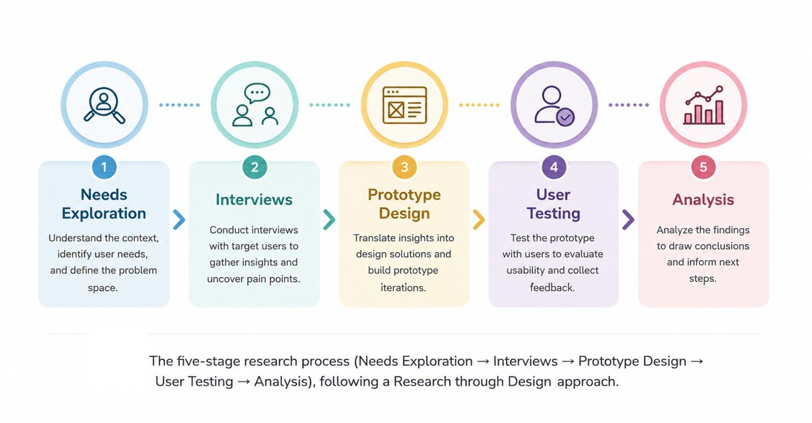
PROCESS
01 PROBLEM SPACE
The membership cards moved into the phone. Not everyone moved with them.
Supermarket membership in the UK now lives almost entirely in apps, and for many shoppers aged 40–60, that creates digital fatigue: stress, avoidance, and lost value at checkout.
The Mental Cost
Excessive app integration threatens mental health. For users aged 40-60, prolonged usage impairs attention and memory, driving digital fatigue that heightens stress, fuels social isolation, and strains family relationships.
Back to Something Physical
The opportunity is to move the membership entry point off-screen and back to a familiar physical card for users aged 40-60.
Information Without the Friction
Users still need what the app offers. Rather than making them navigate menus, AR turns the card into a direct shortcut. Simply scan an icon to jump straight to that function.
The Core Tension
The design had to honour two competing needs: the reassuring familiarity of a physical card and the functional completeness of a full membership app.
Design challenge
Feature Fatigue
Stripping too much away makes the service feel incomplete, yet adding too much recreates the exact digital fatigue we set out to remove.
Frictionless AR
Augmented Reality must enrich the user experience naturally, serving as an intuitive layer rather than another complex tool to learn.
02 INTERVIEW
Semi-structured interviews with six participants (three women, three men, aged 40-60), all active users of at least one UK supermarket membership app.
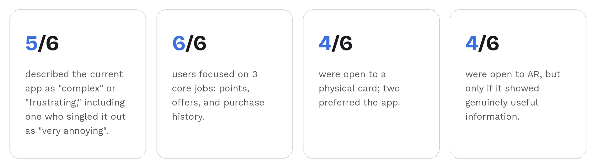
03 PROTOTYPE DESIGN
The model separates operation from information; I keep point collection simple with a single tap and instant physical feedback. Deeper details live within an AR layer, eliminating the need to install an app.
The hardware
To bring this interaction to life, I built a working prototype using a Seeeduino V4.2 (Arduino UNO-compatible) and an MFRC522 NFC reader. This setup drives three distinct feedback channels: a trigger light, sound, and a short vibration, ensuring a seamless experience that relieves checkout queue pressure.
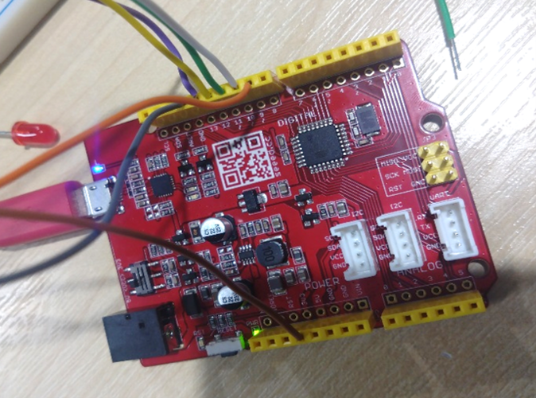
Seeeduino V4.2 during early breadboard assembly.
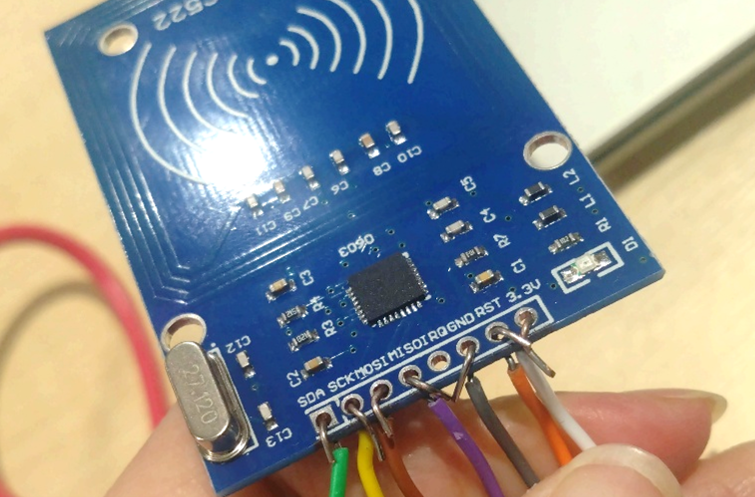
MFRC522 NFC module: later rewired with Dupont cables after breadboard jumpers caused intermittent detection failures.
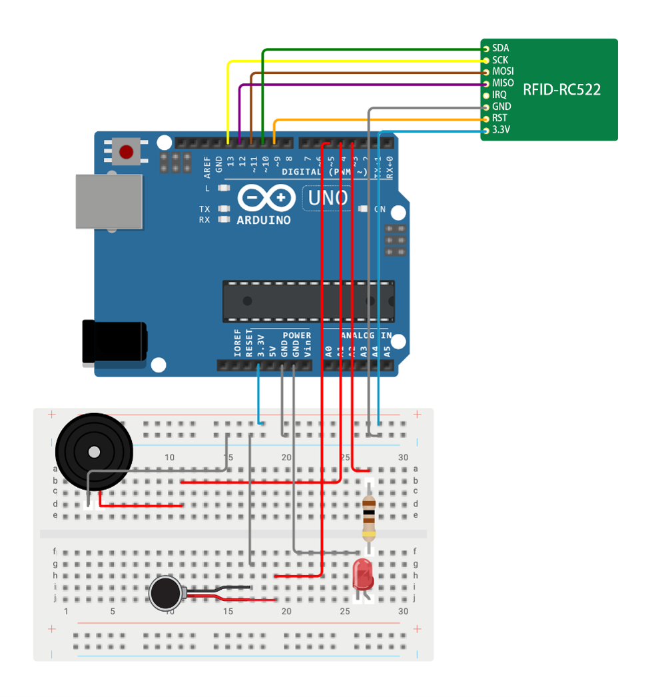
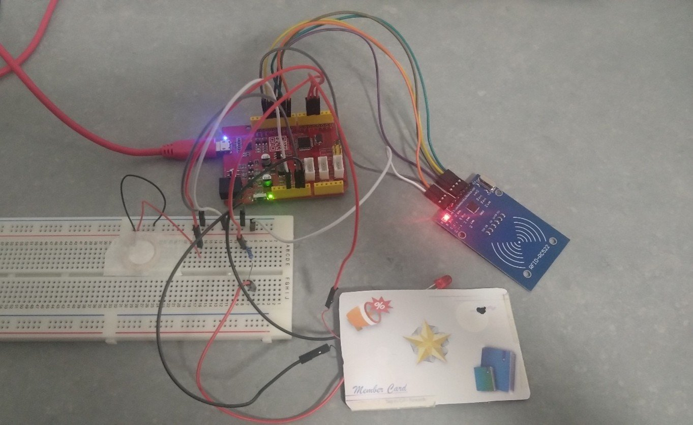
The working prototype- tap-to-trigger sensing with light, sound and vibration, alongside the printed member card carrying the AR markers.
The hardware feedback is given the same care as microcopy, embedding small moments of delight into the physical experience:
Calibrated Vibration: Set to 1.3 seconds to ensure it registers without startling the user.
Visual Sync: The LED holds precisely until the audio melody ends.
Emotional Touch: The piezo plays 'Ode to Joy' for everyday taps, and switches to 'Happy Birthday' on their special day."
The AR
The physical card features three intuitive icons: a star, a megaphone, and a book, designed to minimise the user's cognitive load.
While clean, symmetrical iconography ensures instant recognition for users, it lacks the high-contrast edges required for stable AR tracking. To bridge this gap between user experience and technical constraints, I iterated the artwork in Illustrator by strategically introducing subtle textures and asymmetric details. This significantly optimised tracking speed and stability without sacrificing visual clarity.
Before: Tracking failed
After: Fast & Stable
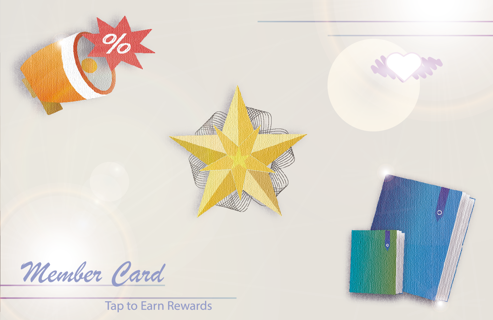
AR interface designs for different membership functions:
(1) points inquiry with reward-like animations; (2) promotional information with bold captions; (3) purchase history with expandable details.
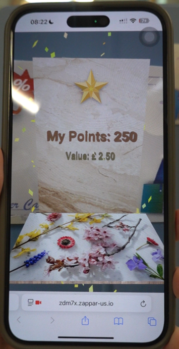
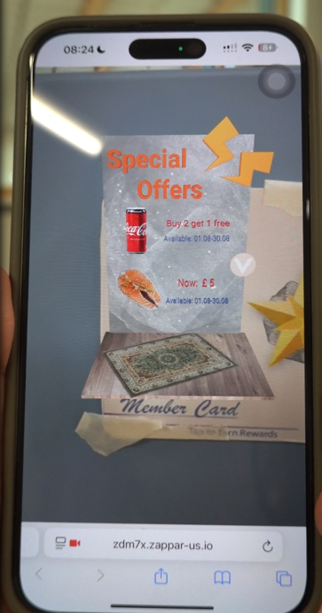
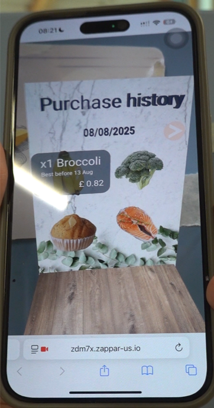
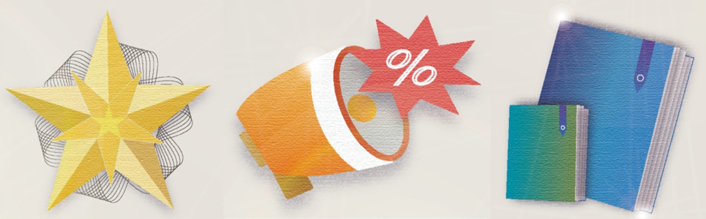
Try it.
04 USER TESTING
Following Nielsen’s five-user usability-testing guideline, I conducted moderated sessions with 5 participants (aged 40–60).
Each session followed a 4-step framework to gather both quantitative and qualitative insights:
Pre-test: Questionnaire on existing membership-app habits.
Interaction: Hands-on prototype testing.
Evaluation: A 15-item Likert questionnaire (assessing usability, engagement, and intention to use).
Deep Dive: Probing follow-up interviews.
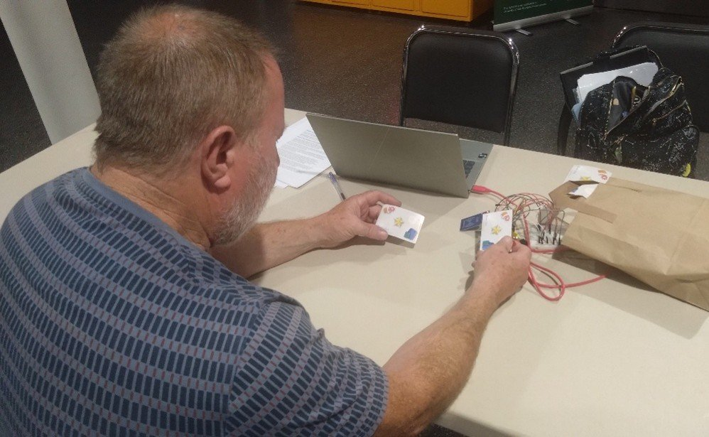
Tapping the tangible card to trigger multisensory feedback.
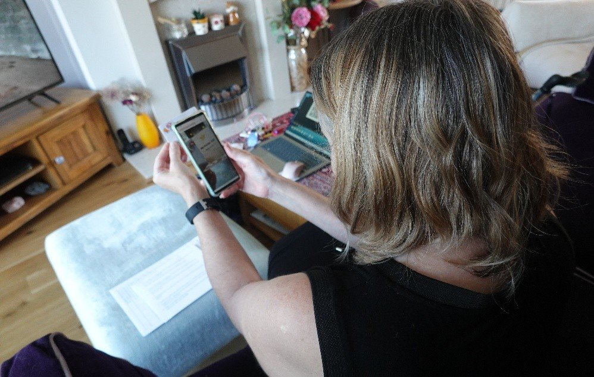
Scanning the card's printed markers to open the AR layer.
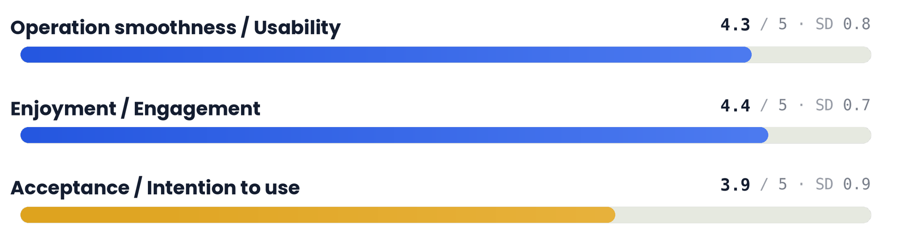
05 ANALYSIS & RESULT
A Generational Gradient in Acceptance: User acceptance wasn't a single number; it split clearly along generational lines:
Over 50s: Preferred the tangible card outright over the digital application.
Early 40s: Valued the physical card as a reliable backup to their existing app habits.
AR Constraints: While the AR layer successfully drove deeper engagement, real-world testing revealed sensitivity to lighting and connectivity. Looking forward, as AR technology matures, these limitations will be overcome, paving the way for seamless, real-world implementation.
What people said
Interview insights reveal a strong preference for familiarity, reliability, and practical advantages in real-world conditions.
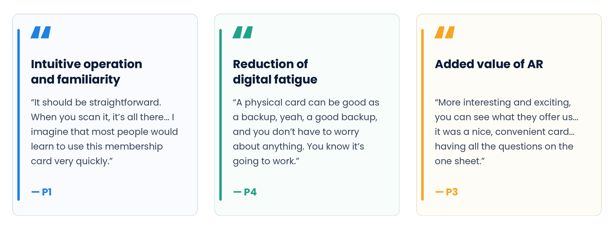
By decoupling the everyday tap from the on-demand AR layer, the system successfully mitigated digital fatigue while retaining full service capability.
The stark age split in user acceptance taught me that, for older demographics, familiarity is paramount. Differing user needs profoundly influence product acceptance, which explains why they embraced this card solution.
This project also showed me why mobile apps dominate: alternative technologies often can't match their friction-free convenience due to technical constraints, and I felt those constraints firsthand while prototyping. It changed how I approach medium selection. I now start by asking whether the medium itself fits the user's context and whether familiarity might matter more to them than innovation.
REFLECTION
IF I TOOK IT FURTHER
Scale via Quantitative Validation
Launch large-scale quantitative testing to validate these screen-free concepts across a broader population, gathering statistically significant data to back up the initial qualitative insights.
Deepen Inclusive Design & Accessibility
Expand the system to address the specific needs of individuals with cognitive or physical disabilities, evaluating how screen-free interactions can bridge the digital divide in retail.
Diversify Form Factors & Tactile Experiences
Transition from standard cards to prototype alternative formats, such as wristbands or keychains, and explore how varying physical shapes improve daily convenience, user acceptance, and relief from digital fatigue.
NEXT PROJECT